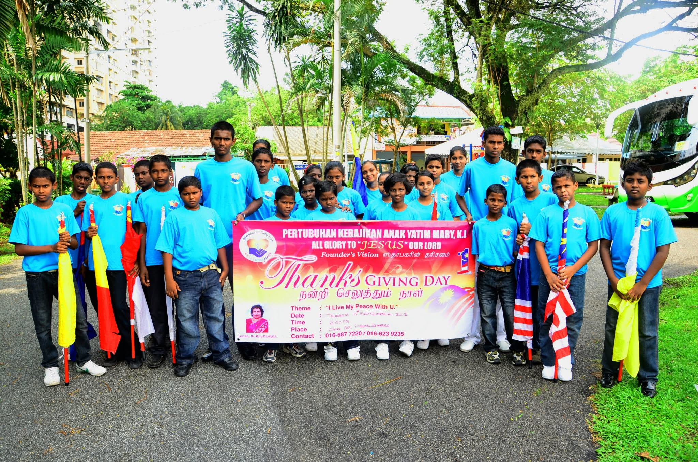
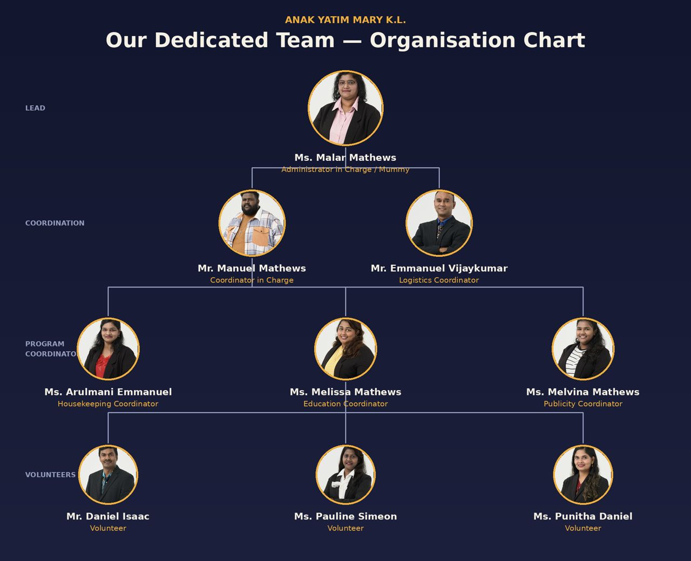

Our Mission
To create a loving, disciplined and compassionate home where every child feels valued, and to guide them into growing as responsible, confident members of the community.

A loving home for every child, a family for life.
Rumah Kasih Mary was established in April 2003 by Pastor Dr. Mary Rayappan, who opened her doors to four children born into desperate conditions. The home began as a single-storey wooden house in Setapak, a suburb of Kuala Lumpur.
Over the years, more parents and government welfare officers reached out to Pastor Mary, and the number of children in her care steadily grew. Today, the home operates a short distance from its original site, in a double-storey house managed by the founder's daughter-in-law, who is affectionately known to the children as "Mummy."
The home is officially registered with the Registrar of Societies and the Government Welfare Department of Malaysia, and it continues its mission of giving displaced children a place to call home.

Raising well-rounded children through spiritual growth, education, health and wellbeing
To create a loving, disciplined and compassionate home where every child feels valued, and to guide them into growing as responsible, confident members of the community.
To increase our capability to care for more at-risk children by owning our own property, expanding support, improving living conditions, growing our team of caretakers, and diversifying our educational resources.
What we strive to achieve for every child in our home
More than two decades of impact
| Year | Milestone |
|---|---|
| 2003 | Home founded by Pastor Dr. Mary Rayappan with four children in a wooden house in Setapak. |
| 2010s | Relocated to a larger double-storey house to accommodate a growing number of children. |
| Ongoing | Officially registered with the Registrar of Societies and Government Welfare Department, Malaysia. |
| Ongoing | Multiple past residents have gone on to earn diplomas in fields such as Early Childhood Education and Computer System Administration. |
| Ongoing | Continued partnership with corporate donors and community groups for festive celebrations and welfare drives. |
The caretakers and coordinators behind Rumah Kasih Mary
